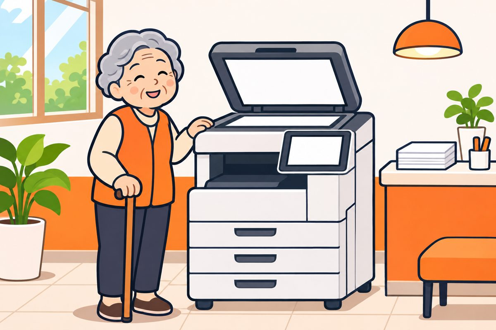

🔒 개인정보 보호 안내
저희는 통신판매 사업자의 개인정보 보호 기준을 엄격히 지키고 있습니다.
휴대폰으로 찍은 신분증 사진은 나중에 명의도용에 쓰일 수 있어 받지 않습니다.
번거로우시더라도 스캐너로 스캔한 정식 규격 파일을 보내 주세요. 안전하게 암호화해 개통에만 쓰고, 개통이 끝나면 모든 정보를 바로 폐기합니다.
신분증 스캔,
이렇게 하시면 됩니다
아래 순서대로 천천히 따라 해 주세요.
다 되면 맨 아래 보내기에서 보내 주세요.
스캐너 있는 곳 찾기
버튼을 누르면 지금 계신 곳 근처를 지도에서 찾아 드려요.

🏛️ 주민센터(동사무소) · 도서관
복합기가 있는 곳이 많지만, 파일로 받는 스캔은 안 되는 곳도 있어요. 가시기 전에 전화로 "신분증 스캔해서 파일로 받을 수 있나요?" 하고 물어보세요.
🔍 가까운 주민센터 찾기 가까운 도서관 찾기 ›"신분증 앞면을 세로로 놓고 컬러, 300DPI 이상으로 스캔해서, 이 휴대폰으로 파일을 받고 싶어요."
스캔하기
기계마다 화면은 조금 달라도 순서는 같아요.
-
화면에서 '스캔'을 누르세요
'복사'가 아니라 '스캔'이에요. 결제 화면이 나오면 안내대로 결제해 주세요.
-
뚜껑을 열고, 신분증을 세로로 세워 앞면이 아래로 가게 놓으세요
신분증을 세로(길쭉하게 선 모양)로 돌려서, 유리판 왼쪽 위 모서리에 딱 맞춰 놓아 주세요.

예시 그림 · 세로로, 앞면이 유리에 닿게, 왼쪽 위 모서리에 -
뚜껑을 꼭 닫으세요
열어 두면 빛이 들어가 홀로그램이 번져 다시 하셔야 해요.
-
설정을 이렇게 맞추세요
- 해상도
- 300DPI 이상 (600도 좋아요)
- 색상
- 컬러
- 방향
- 세로
- 파일
- PDF 또는 JPG
해상도는 'DPI' 또는 '화질'이라고 적혀 있어요. 모르겠으면 가장 높은 값을 고르세요.
-
'시작'을 누르세요
기계가 '위잉' 소리를 내며 한 번 지나가면 끝이에요.
-
파일을 휴대폰으로 받으세요
화면에 나오는 방법 중 편한 걸 고르세요.
- QR코드
- 휴대폰 카메라로 찍으면 바로 받아져요
- 이메일
- gwg2460@gmail.com 을 입력하면 저희에게 바로 보내져요
다 끝나면 신분증을 꼭 챙기세요! 유리판 위에 두고 가시는 분이 많아요.
잘 됐는지 확인하기

보내기 전에 하나씩 눌러 확인해 보세요
보내기
받으신 스캔 파일을 카카오톡 상담창이나 이메일로 보내 주세요. 담당자가 확인하고 연락드릴게요.
💬 카카오톡으로 보내기 ✉️ 메일로 보내주세요gwg2460@gmail.com